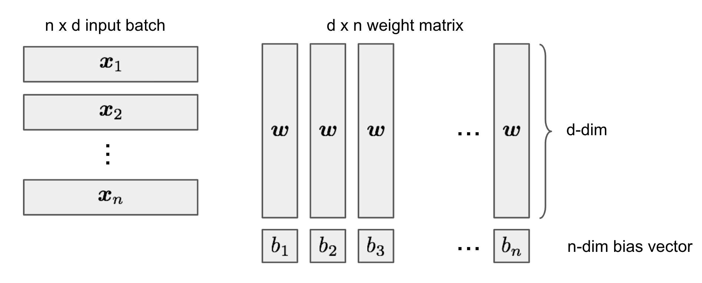

目录
[2019-05-27更新：新增了彩票票假设一节。]
如果你和我一样，从传统机器学习领域转入深度学习，可能会经常思考这样一个问题：典型的深度神经网络参数量极大，训练误差又能轻松达到完美，那它应该会遭受严重的过拟合才对。可它又是如何成功泛化到未见过样本的呢？
试图理解深度神经网络为何能够泛化的努力，让我想起系统生物学领域那篇有趣的论文——“生物学家能修好收音机吗？”（Lazebnik, 2002）。如果一个生物学家用研究生物系统的那套方法去修理收音机，日子可就难过了。因为收音机的完整工作机制并未揭开，仅仅拨弄局部的微小功能可能给出一些线索，却难以呈现系统中所有的相互作用，更不用说整个工作流程了。不管你是否认为这与深度学习相关，这都是一篇非常有趣的读物。
在这篇文章中，我想讨论几篇关于深度学习模型泛化能力和复杂度度量的论文。希望它能为你理解为什么深度神经网络（DNN）能够泛化提供一些思路。
关于压缩和模型选择的经典定理
假设我们有一个分类问题和一个数据集，可以开发多种模型来解决它——从拟合一个简单的线性回归，到把整个数据集直接记在磁盘里。哪一个更好？如果我们只关心训练数据上的准确率（尤其是测试数据很可能未知的情况下），直接记忆的方法似乎是最好的——但这听起来就不对劲。
有许多经典定理能在我们决定一个好模型应具备哪些性质时提供指导。
奥卡姆剃刀
奥卡姆剃刀（Occam’s Razor）是由14世纪的William of Ockham提出的一种非正式的问题求解原则：
“简单方案比复杂方案更可能是正确的。”
当我们面对多种候选的底层理论来解释世界而必须从中选择一个时，这句话的力量极为强大。过多的不必要假设对某个问题看似合理，但却更难推广到其他复杂情况，最终也难以导向宇宙的基本原理。
想想看，人们花了几百年才意识到白天天空是蓝色而日落时呈红色，其实是同一个原因（瑞利散射），尽管两种现象看起来差异很大。人们一定曾针对它们分别提出过许多其他解释，但最终获胜的是那个统一而简单的版本。
最小描述长度原理
奥卡姆剃刀的原则同样可以应用到机器学习模型上。这个概念的形式化版本被称为最小描述长度（Minimum Description Length，MDL）原理，用于在给定观测数据的情况下比较相互竞争的模型或解释。
“理解就是压缩。”
MDL的核心思想是将学习视为数据压缩。通过压缩数据，我们需要发现数据中的规律或模式，从而具备推广到未见样本的高度潜力。理论认为，深度神经网络首先通过最小化泛化误差来表征数据，然后通过去除噪声来学习对这种表征进行压缩。用信息论剖析深度学习
与此同时，MDL把模型描述本身也视为压缩传递的一部分，因此模型不能任意大。
MDL原理的双部分版本指出：设\mathcal{H}^{(1)}, \mathcal{H}^{(2)}, \dots是一组能够解释数据集\mathcal{D}的模型列表。其中最好的假设应当最小化以下总和：
简单来说，最好的模型就是那个包含编码后的数据和模型自身且规模最小的模型。按照这个标准，我在章节开头提出的那种直接记忆的方法无论在训练数据上取得多高的准确率，都显得非常糟糕。
有人可能会质疑奥卡姆剃刀是错误的——既然现实世界可以任意复杂，我们为什么要寻找简单模型呢？MDL提供了一个有趣的视角：把模型视为“语言”而非根本的生成定理。我们希望找到好的压缩策略来描述一小部分样本中的规律，而它们不必是解释该现象的“真实”生成模型。模型可以是错的，但仍然有用（比如任何贝叶斯先验）。
柯尔莫哥洛夫复杂度
柯尔莫哥洛夫复杂度（Kolmogorov Complexity）借助现代计算机的概念来定义一个对象的算法（描述）复杂度：它是能够描述该对象的最短二进制计算机程序的长度。按照MDL的观点，计算机本质上是最通用的数据解压器。
柯尔莫哥洛夫复杂度的形式化定义如下：给定一台通用计算机\mathcal{U}和一个程序p，令\mathcal{U}(p)为计算机运行该程序的输出，L(p)为程序的描述长度。那么，字符串s相对于通用计算机\mathcal{U}的柯尔莫哥洛夫复杂度K_\mathcal{U}为：
需要注意的是，通用计算机是指能够模拟任何其他计算机行为的机器。所有现代计算机都是通用的，因为它们都可以归约为图灵机。这个定义与我们使用哪种计算机无关，因为另一台通用计算机总是可以被编程来复制\mathcal{U}的行为，而编码这个复制程序的开销只是一个常数。
柯尔莫哥洛夫复杂度和香农信息论之间有许多联系，因为两者都与通用编码紧密相关。一个惊人的事实是，随机变量的期望柯尔莫哥洛夫复杂度近似等于其香农熵（参见该报告的2.3节）。关于这个主题的更多内容超出了本文范围，但网上有许多有趣的阅读材料，感兴趣的读者可以自行查阅 :)
所罗门诺夫推理理论
奥卡姆剃刀的另一个数学形式化是所罗门诺夫的通用归纳推理理论（Solomonoff，1964）。其原则是偏好那些对应于“最短程序”的模型，这些程序能够根据训练数据的柯尔莫哥洛夫复杂度生成训练数据。
深度学习模型的表达能力
与传统的统计模型相比，深度神经网络的参数数量极其庞大。如果我们用MDL来衡量深度神经网络的复杂度，并将参数数量视为模型描述长度，结果会非常糟糕。模型描述L(\mathcal{H})很容易失控。
然而，拥有大量参数对于神经网络获得强大的表达能力是必要的。正因为它能够捕捉任何灵活的数据表征，深度神经网络才在众多应用中取得了巨大成功。
通用逼近定理
通用逼近定理指出，一个前馈网络若满足以下条件：1）具有线性输出层；2）至少含有一个拥有有限数量神经元的隐藏层；3）采用某种激活函数，就能够以任意精度逼近定义在\mathbb{R}^n紧致子集上的任何连续函数。该定理最初针对 sigmoid 激活函数得到证明（Cybenko, 1989）。后来证明，通用逼近性质并非特定于激活函数的选择（Hornik, 1991），而是取决于多层前馈网络的架构。
虽然单隐藏层的前馈网络就足以表示任何函数，但其宽度必须呈指数级增长。通用逼近定理并未保证模型能否被正确学习或泛化。通常，增加更多层有助于减少浅层网络所需的隐藏神经元数量。
为了利用通用逼近定理，我们总是可以找到一个神经网络以任意期望的误差阈值来表示目标函数，但我们要为此付出代价——网络可能会变得极其庞大。
证明：两层神经网络在有限样本下的表达能力
前面讨论的通用逼近定理并未考虑有限样本集的情况。Zhang et al. (2017)对两层神经网络在有限样本下的表达能力给出了一个简洁的证明。
一个神经网络C可以在d维空间中、给定样本量为n的情况下表示任意函数，如果：对任意有限样本集S \subseteq \mathbb{R}^d（共\vert S \vert = n个样本）和定义在该样本集上的任意函数f: S \mapsto \mathbb{R}，我们都能找到一组权重配置C，使得C(\boldsymbol{x}) = f(\boldsymbol{x}), \forall \boldsymbol{x} \in S。
该论文提出了以下定理：
存在一个具有 ReLU 激活函数、2n + d个权重参数的两层神经网络，能够表示d维空间中大小为n的样本上的任意函数。
证明。首先我们要构造一个两层神经网络C: \mathbb{R}^d \mapsto \mathbb{R}。输入是一个d维向量\boldsymbol{x} \in \mathbb{R}^d。隐藏层包含h个隐藏单元，对应的权重矩阵为\mathbf{W} \in \mathbb{R}^{d\times h}，偏置向量为-\mathbf{b} \in \mathbb{R}^h，并使用 ReLU 激活函数。第二层输出一个标量值，权重向量为\boldsymbol{v} \in \mathbb{R}^h，偏置为零。
对于输入向量\boldsymbol{x}，网络C的输出可表示为：
其中\boldsymbol{W}_{(:,i)}是矩阵d \times h的第i列。
给定样本集S = \{\boldsymbol{x}_1, \dots, \boldsymbol{x}_n\}和目标值\boldsymbol{y} = \{y_1, \dots, y_n \}，我们希望找到合适的权重\mathbf{W} \in \mathbb{R}^{d\times h}、\boldsymbol{b}, \boldsymbol{v} \in \mathbb{R}^h，使得C(\boldsymbol{x}_i) = y_i, \forall i=1,\dots,n成立。
将所有样本点合并为一个批次，作为输入矩阵\mathbf{X} \in \mathbb{R}^{n \times d}。若令h=n，则\mathbf{X}\mathbf{W} - \boldsymbol{b}将是一个大小为n \times n的方阵。
我们可以将\mathbf{W}简化为所有列向量都相同：
